(i) A circle with centre P and radius 3 m.
(ii) A circle with the centre of the clock as centre and radius 10 cm.
(iii) The perpendicular bisector of the line AB.
(iv) A straight line parallel to the road, 20 cm above it.
(v) The bisector of the angle AÔB.
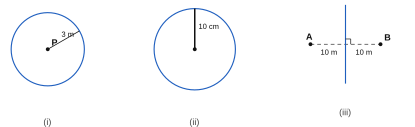
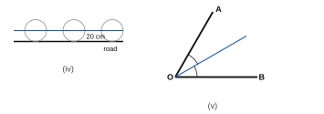
(ii) With A and B as centres and a radius more than half of AB (e.g. 5.5 cm), draw arcs on both sides of AB. Join the two points of intersection → perpendicular bisector.
(iii) With A as centre and radius 5 cm, draw arcs cutting the bisector at C1 and C2.
(iv) BC1 = 5 cm (every point on the perpendicular bisector is equidistant from A and B).
Distance from C1 to AB = 3 cm.
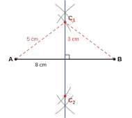
Locus of points 6 m from P: circle with centre P, radius 6 cm. Locus of points 8 m from Q: circle with centre Q, radius 8 cm.
(ii) The two circles meet at T1 and T2 → there are two possible positions for the tap.
(iii) PT1Q = 90°.
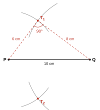
(ii) Two straight lines parallel to PQ, 2 cm (10 m) away on either side of it.
(iii) The perpendicular bisector of PQ.
(iv) The loci meet at T1 and T2 → two positions.
(v) PT1 ≈ 5.4 cm → actual distance ≈ 5.4 × 5 = 27 m.
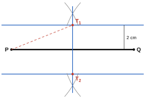
(i) Locus 8 m from PQ (inside the plot): a line parallel to PQ, 8 m from it. Locus 5 m from PS: a line parallel to PS, 5 m from it.
(ii) T is the point where these two lines meet.
(iii) T is 12 m from SR (20 − 8) and 25 m from QR (30 − 5).
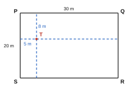
(ii) With P as centre, draw arcs cutting AB on both sides of P. With these two points as centres and an equal, larger radius, draw arcs that intersect above AB. Join this point to P.
(iv) AQ = 5 cm.
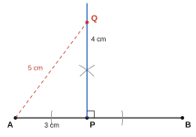
(ii) With Y as centre, draw an arc cutting XZ at two points. With these points as centres and an equal radius, draw arcs that intersect on the other side of XZ. Join Y to this point; it meets XZ at D.
(iii) XD = ZD ≈ 4.3 cm, YD = 2.5 cm. (D is the midpoint of XZ because XY = YZ.)
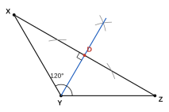
(ii) To construct 60° at P: with P as centre draw an arc cutting PQ; with that point as centre and the same radius cut the arc again; join P to this point. Repeat at Q.
(iii) PR = QR = 8 cm → PQR is an equilateral triangle.
(v) QS = 4 cm and PŜQ = 90°.
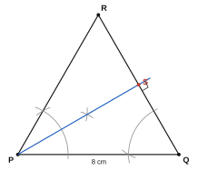
(i) Construct the perpendicular to AB at A (90°), then bisect the right angle → 45°.
(ii) Construct 60°; bisect it → 30°; bisect the 30° angle → 15°.
(iii) Construct 90° and 60° at the same point on the same arm, then bisect the angle between them → 75° (= 60° + 15°).
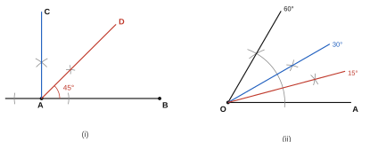
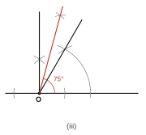
30° at P: construct 60° and bisect it. 45° at Q: construct 90° and bisect it.
(iv) PR̂Q = 105° (180° − 30° − 45°), PR ≈ 5.1 cm, QR ≈ 3.6 cm.
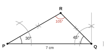
(ii) With L as centre draw an arc cutting LM and LK. With M as centre and the same radius draw an arc cutting ML. Take the length of the chord cut on angle L, and mark the same length on the new arc from ML. Join M to this point and produce it → MN.
(iii) PL = PM (for example, when the angle is 50°, PL = PM ≈ 4.7 cm).
(iv) PLM is an isosceles triangle, because its base angles are equal.
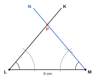
(iii) With O as centre draw an arc cutting AB at two points; with those points as centres and equal radius draw arcs intersecting on the other side of AB; join O to that point.
(iv) AN = BN = 3 cm, ON ≈ 2.6 cm.
Observation: the perpendicular drawn from the centre to a chord bisects the chord.
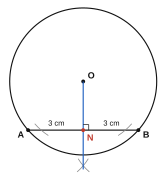
(ii) Two straight lines, each 10 m long, parallel to AB and 4 m from it on either side, joined at the ends by two semicircles of radius 4 m with centres A and B.
(iii) Area = rectangle + two semicircles = 10 × 8 + 22/7 × 4 × 4 = 80 + 50.29 = 130.29 m2
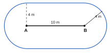